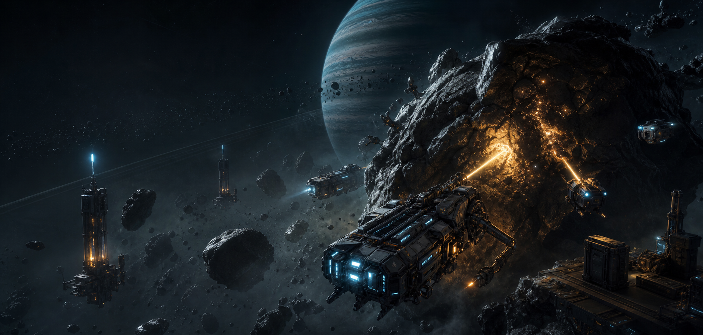
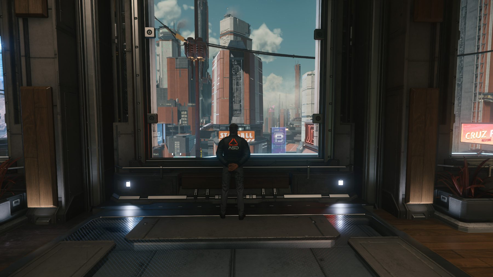
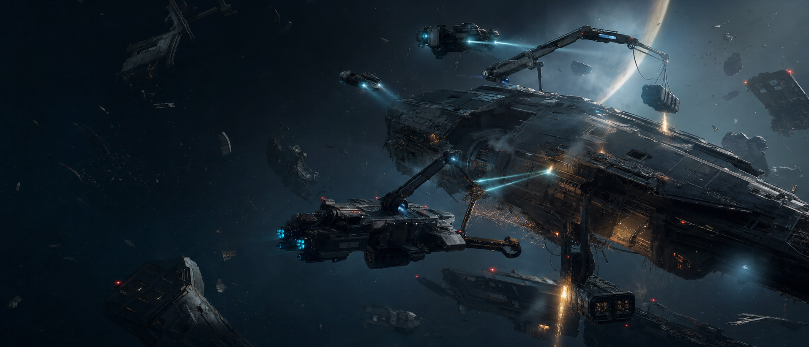
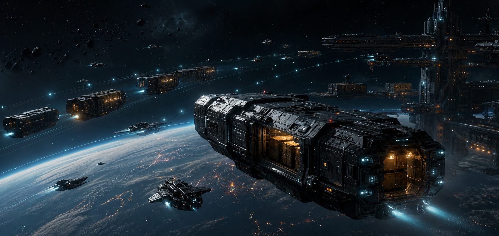
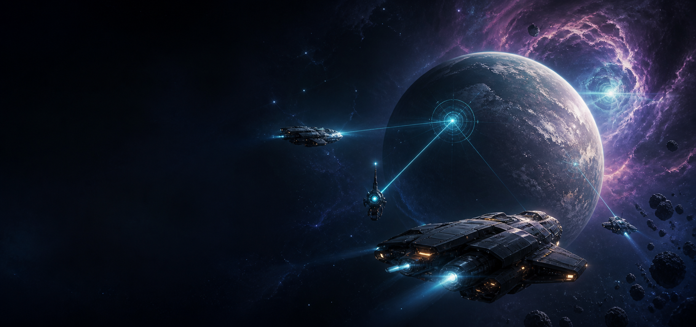
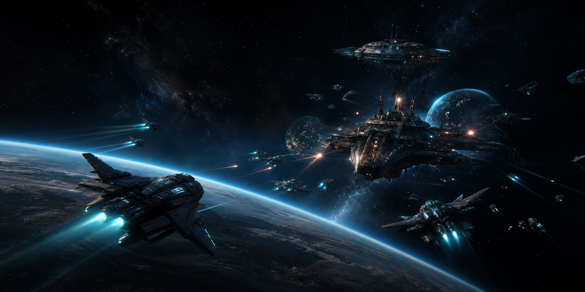
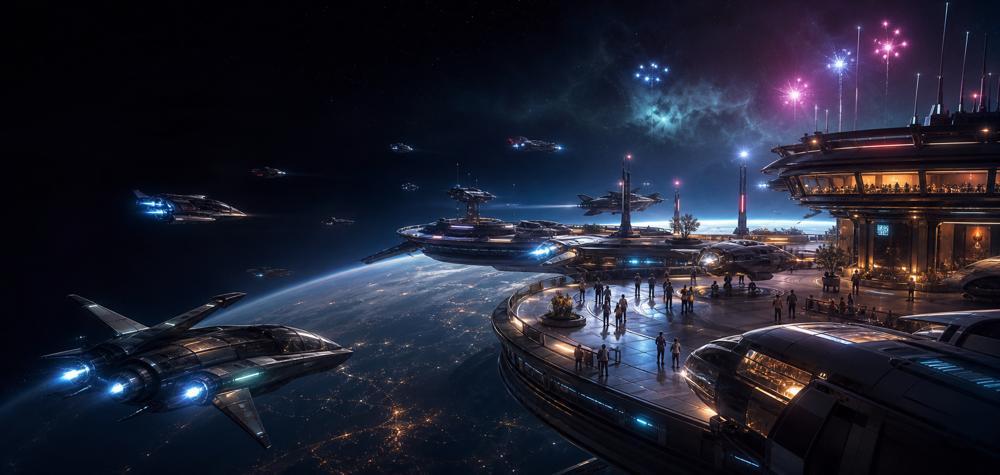

// Industrie

Mining
Koordinierte Förder-Konvois — vom Prospektor bis zum Refinery-Run. Geteilte Routen, geteilter Ertrag.
Crewplay-Orga · Deutschsprachig & einsteigerfreundlich
Eine deutschsprachige Crew, die auftaucht statt nur zu reden. Eigener Operations-Stack, feste Einsatzabende und ein klarer Weg von „Hallo“ bis zum festen Platz auf der Brücke.
Bei uns fliegen Veteranen neben Piloten, die letzte Woche ihren ersten Quantum-Sprung gemacht haben — und keiner schaut auf den anderen herab.
Raumdock ist eine deutschsprachige Star-Citizen-Orga mit eigenem Operations- und Fleetplanner-Stack. Wir teilen Wissen, planen Touren und ziehen uns gegenseitig aus der Klemme. Vom Mining-Konvoi über Salvage-Schichten bis zum spontanen Bunker-Run — Hauptsache zusammen, nicht jeder in seiner eigenen Instanz.

„Jeder willkommen“ steht überall und filtert nichts. Wir sagen lieber vorher, mit wem wir fliegen wollen. Das spart allen Zeit.
Selektiv heißt nicht arrogant. Es heißt: Wir wissen, mit wem wir fliegen wollen — und stehen dazu.
Keine starren Pflicht-Rollen. Du suchst dir aus, worauf du Bock hast — und findest immer eine Crew, die mitkommt.

Koordinierte Förder-Konvois — vom Prospektor bis zum Refinery-Run. Geteilte Routen, geteilter Ertrag.

Wrackfelder zerlegen im Schichtbetrieb. Mehrere Reclaimer, klare Cargo-Rotation, eine Nacht.

Frachtläufe durch ruhige und umkämpfte Sektoren. Eskorte inklusive, wenn die Route es verlangt.

Lange Touren in den Rand des Verse — Foto-Stops, neue Systeme, Datenruns. Für die ruhigen Nächte.

Bunker-Sweeps, Geleitschutz und FPS-Training. Wir schießen nicht zuerst — aber wir kommen vorbereitet.

Lagerfeuer auf einem Mond, Schiffs-Refits, Neulingen helfen. Nicht jeder Abend muss eine Mission sein.
Kein anonymes Kollektiv. Echte Leute mit echter Haltung — wenn etwas schiefgeht, weißt du, wer geradesteht.

„Der, der sagt, was Sache ist.“

„Macht Angebote, die man nicht ablehnen kann.“

„Etwas muss weg — sie macht es weg.“

„Es soll weh tun — das ist sein Job.“

„Nachhaltige und endgültige Lösungen sind sein Gebiet.“
Die vollständige Crew ist öffentlich auf RSI gelistet — robertsspaceindustries.com/orgs/RDOC ↗
Wir haben keinen Aufnahme-Prozess mit Stufen, Probezeit und Punkten. Bei uns spielst du einfach mit — und wenn du dabei sein willst, dann bist du dabei.
Discord-Server beitreten, kurz Hallo sagen. Voice ist sofort offen — keine Freischaltung, kein Formular.
Häng dich beim nächsten Einsatzabend einfach dran. Kein Test, keine Probezeit, kein Bewerbungsgespräch.
Wenn du dabei sein willst, bist du dabei. So einfach ist das — den Rest macht die Zeit im Voice.
Nicht reden, sondern machen.
Alle für einen — einer für alle!
Ein Kalendereintrag ist nach zwei Tagen tot. Ein gut geschriebener Bericht wirbt noch in zwei Jahren. Hier protokollieren wir, was die Crew tatsächlich geflogen hat.
Ops-Log wird geladen…
Man trifft uns nicht nur im Verse. Einmal im Jahr sitzen wir an einer echten Bar — in Deutschland und in der Schweiz. Dazwischen läuft der Betrieb.
Einmal im Jahr kein Verse, sondern Bar. Echte Gesichter, echtes Bier, dieselbe Crew.
Konvois, Bunker, Salvage-Schichten und Foto-Touren. Angekündigt im Discord, gemeinsam geflogen.
JustCallMeDeimos nimmt die Org live mit ins Verse — Abende, an denen die Community mitfliegt.
Fleetplanner-Events werden geladen…
Haus-Streamer JustCallMeDeimos nimmt euch live mit ins Verse — und mit ihm ein paar befreundete Creator aus dem Twitch-Team VERSE.
Unser Werkzeugkasten für organisierte Star-Citizen-Abende: Missionen planen, Crews koordinieren, Funkwege sauber halten, Discords verbinden.
Missionen, Rollen, Teilnehmer und Vorbereitung an einem Ort — statt alles im Chat zu verlieren.
Finde Anschluss: offene Squads sehen, beitreten oder selbst eins aufmachen — der schnelle Weg in den nächsten Einsatz.
Long Range Communicator: verbindet Textkanäle über mehrere Discord-Server in Echtzeit — mit Name und Avatar des echten Absenders. Beitritt nur per Einmal-Token vom Operator.
Offenes Dashboard: Wo das Geld der Org herkommt und hingeht. Transparenz statt Blackbox.
Nein. Das Starter-Schiff reicht völlig. Für größere Touren gibt es bei uns oft Mitfluggelegenheiten.
Nein. Im Voice sprechen wir deutsch. Englisch hilft im Spiel, ist bei uns aber kein Muss.
Nein. Real Life geht immer vor. Wer eine Weile weg ist, kommt einfach wieder zurück.
Discord rein, Hallo sagen, mitfliegen. Den genauen Weg zeigt dir der Einstieg weiter oben.
Verantwortlich für den Inhalt:
JustCallMeDeimos — Torsten Ennenbach
c/o Online-Impressum.de #4910
Europaring 90 · 53757 Sankt Augustin · Deutschland
E-Mail: tower@raumdock.org
Raumdock ist eine inoffizielle, von Spielern organisierte Community ohne Verbindung zu Cloud Imperium Games (CIG) oder Roberts Space Industries (RSI). Alle Marken sind Eigentum der jeweiligen Inhaber. Private, nicht-kommerzielle Gemeinschaft ohne Gewinnabsicht.